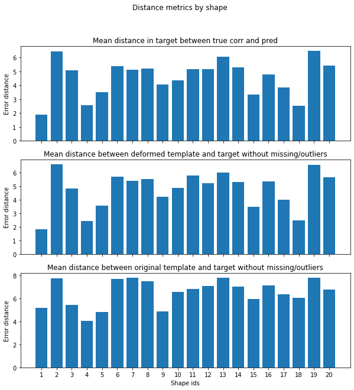

Software for shape modelling and registration
Filipa Valdeira
During the progress of this work and extensive amount of python code was developed which makes the modelling and shape registration an easier taks. This creates useful classes for handling registered and non registered datasets, as well as an easy extension of registration to new methods or different kinds of data. The two developed methods are then provided in encapsulated functions which do not require any knlowedge of this underlying library. Nonetheless, this can be a useful tool for anyone working in this field.
When convinient we rely on the open-source library Open3D specifically developed to handle 3D data. Partciularly, when handling meshes we resort to their functions for input/output or mesh creation from a point cloud.
The main components of this library are the modules shapes, registration and models. The first implements classes for individual shapes and full datasets, either registered or not, and allows for shape transformations while keeping track of their correspondences. The second handles different registration methods for a given dataset. The last produces low dimensional models which can be used only for registered datasets.
shapes
In this module there are 3 important classes on the user point of view:- Shape - handles each shape element, either a point cloud (only vertices) or a mesh (vertices and faces)
- ShapeDataset - handles a set of shape elements (all of the same type) and includes methods for plotting, transforming shapes or saving them to files.
- RegDataset - handles a set of registered shape elements with respect to a given template, obtained from the registration procedure. Includes the deformed template obtained from the registration as well as the correspondence vectors for each shape.
ShapeDataset
A dataset must be instanciated with a given dimension dim, which all its shapes must respectfrom dataset import ShapeDataset
dim = 3
dataset = ShapeDataset(dim)Adding new shapes
New shapes can be added with methods add_mesh or add_shape, depending on the type of data. The set of shapes is then stored in a dictionary shapes_dict, with the respective shape id has keys and an object shape as values. Below we provide an example to add a new a mesh and a new point set - note that different kinds cannot be included in the same dataset.Adding a new point set shape
import numpy as np
id = 0
pts = np.random.rand(20,3)
dataset.add_shape(id, pts)Adding a new mesh shape
import numpy as np
id = 0
vertices = np.random.rand(20, 3)
faces = np.random.randint(0, 20, (30,3))
dataset.add_mesh(id, vertices, faces)Creating altered datasets
The following methods return a new ShapeDataset with a given modification. They can be applied to specific shapes by defining id_list. Below we provide an example of a modification.- struct_missing_data - removes data points in a given bounding box
- struct_missing_data_ID - removes data points by their id
- random_missing_data - randomly removes a given percentage of data points
- random_noisy_data - adds noise with a given variance to each data point
- outliers_uniform - randomly places a given ratio of outliers within a bounding box of each shape
- outliers_struct - randomly places a given ratio of outliers within a defined region
id_list = [2,3,4]
miss_ratio = 0.8
dataset_transf = dataset.random_missing_data(miss_ratio,id_list)
Saving shapes to files
All the shapes in the dataset can be saved into a dest_folder with different file formats. If one wishes to save obly the shape points the available formats are '.csv' and '.txt'. For meshes, there are '.ply' or '.stl' - if a dataset has only point clouds, 3D meshes will be generated with Open3D. Below is an example of this method.dest_folder = './Results'
file_type = 'ply'
dataset.save_to_files(dest_folder,file_type)RegDataset
This object is obtained as an output of a registration method. It contains information on the registration method used and the results obtained - the deformed template for each shape and the retrieved correspondences. We cover the most important attributes and methods from the user point of view.
Results from registration
The following attributes contain the output from any registration method.- corr_by_template - dictionary with keys as shapes ids and values are a list of correspondences in the point of view of the template, i.e. the number of elements equals the number of target points, the ids indicate the target point for a given template point and 'nan' values indicate a missing point.
- corr_by_target - similar to corr_by_template but in the point of view of the target.
- def_src_dict - dictionary where each shape id is associated to the deformed template matrix obtained
Useful plotting functions
The following are useful methods to plot registered shapes where one can visualize the correspondences obtained. Note that these are mostly suitable for 2D data.- plot_2_shapes - plots 2 different shapes in the dataset with the correspondences obtained. For a more clear result, a subset of correspondences can be specified. Non connected points are also identified.
- plot_template_and_shape - plots two figures, one with the original template and the target, and one with the deformed template and the target. Both include the visualization of the correspondences.
id = 1
reg_dataset.plot_template_and_shape(id, begin = 0, end = 'all')Output shapes
Registration
The main classes here are ShapesRegistration - to perform registration with different methods - and RegMetrics - to evaluate results from resgistration under different metrics.
ShapesRegistration
This is a generic class that can then be used to create new classes for a desired method by implementing the method pair_registration. We will first give an overview of the class and then explain how to implement pair_registration. Currently, the implemented methods are ICP, NICP, BCPD and GPReg.
simple_registration
The way to perform registration is with a call to the method simple_registration, which receives as input a template, a ShapeDataset object and an id_list of the shapes to register. The registration can be performed in parallel by setting the flag flag_parallel to true. The output is an object of class RegDataset.
Create a registration method class
Any registration class inherits from ShapesRegistration. Then its specific attributes can be defined and the method pair_registration must be implemented.pair_registration receives as input two numpy matrices, the target and the source - the source must be deformed to fit the target. The specific steps of the method are then implemented. It must return a numpy matrix of the same dimensions as the source with its deformed version and a correspondence vecotr with the ids of the target corresponding to each template point - if no correspondence is found that element is set to nan.
Usage
Below we present an example of usage for the registration with ICP.max_dist = 0.25
icp_reg = IcpRegistration(reg_type = 'point_to_point', max_dist=max_dist, scaling=False)
flag_parallel = False
id_list = 'all'
reg_dataset = icp_reg.simple_registration(template, dataset, id_list, flag_parallel)
RegMetrics
This class requires as input one object ShapeDataset with the original dataset and one object RegDataset with the output of a registration procedure. It computes a given number of pertinent metrics and displays the results. Below we describe the most useful methods.plot_dist_metrics_by_shape - produces 3 bar plots with 3 different distance measures: average distance between the deformed template and target, average difference between the original template and target and average difference in the target for correspondences found. 
plot_corr_metrics_by_shape - plots correspondences metrics by shape
plot_outlier_metric_by_shape - plots outliers metrics by shape (accuracy, recall and precision)
plot_missing_metric_by_shape - plots missing data metrics by shape (accuracy, recall and precision)